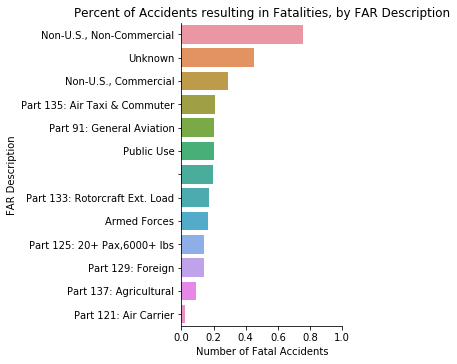

Robinson R44: Trouble in the Air for Brazil
February 6,2020
Allison R. Young
A recent analysis of aviation accident data from the National Transportation Safety Board (NTSB) found that helicopters are one of the deadliest forms of common air travel, particularly in Brazil.
1 in 5 aviation accidents results in a death. 1 in 4 helicopter accidents results in a death.
However, the probability of death is not the same for every kind of flight. In addition to the expected contributors to crashes (such as weather conditions and heavy maneuvering), the origin of flight plays a strong role in the likelihood that an accident will be fatal.Non-US, Non-Commercial Flight accidents were nearly four times as likely to result in a fatality than US General Aviation accidents (76% vs 20%).
In Brazil, the rate is more than 9 out of 10.
Nearly all helicopter accidents reported from Brazil were fatal (95%).

More than half of Brazil’s fatal accidents occurred in a helicopter known as a Robinson R44.


A quick Google search on Robinson R44 helicopters in Brazil demonstrates that the concerns presented from this analysis are not far off base. Multiple news articles reference serious accidents affecting hobbyists and by standing citizens alike (1,2). The New York Times even reported that Robinson R44s were involved in 42 fatal crashes in the U.S. from 2006 to 2016(3). The most commonly discussed hypothesis for why the Robinson R44 helicopter is so deadly, involves a special rotor unique to Robinson designs. This rotor makes the aircraft more susceptible to a phenomenon called “mast bumping”, which causes the aircraft to fall or essentially self-destruct under certain conditions (4). Additionally, a report published by the Robinson company itself in 2016 warned of dangerous, unauthorized repairs to these rotors in Brazil (5).
Regardless of the reasoning, the high probability of fatalities is a dangerous trend worthy of note for a country with a newly revitalized economy and growing helicopter market (6).
References:
1) http://www.helipress.net/schede-1857-a_robinson_r44_helicopter_crashed_while_carrying_a_bride_at_her_wedding
2) https://www.mirror.co.uk/news/world-news/tourist-films-inside-helicopter-crash-138071633
3) https://www.latimes.com/projects/la-me-robinson-helicopters/ (also source for the mast graphic)
4) http://www.helicopterinstruction.com/mast-bumping/
5) https://robinsonheli.com/wp-content/uploads/2018/05/r22_r44_sa_unauthorized_repairs_on_main_rotor_blades_in_brazil.pdf
6) https://www.janes.com/article/87719/laad-2019-helibras-believes-potential-brazil-economic-recovery-could-boost-helicopter-programmes